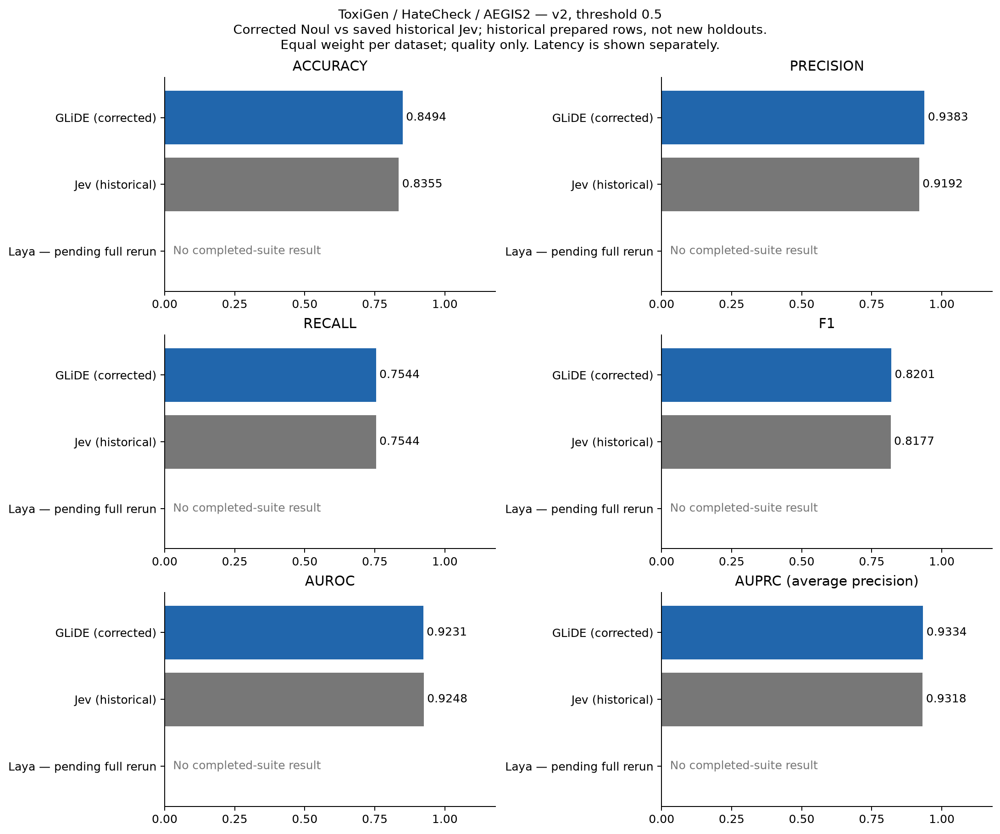
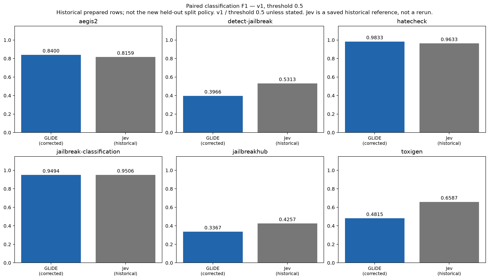
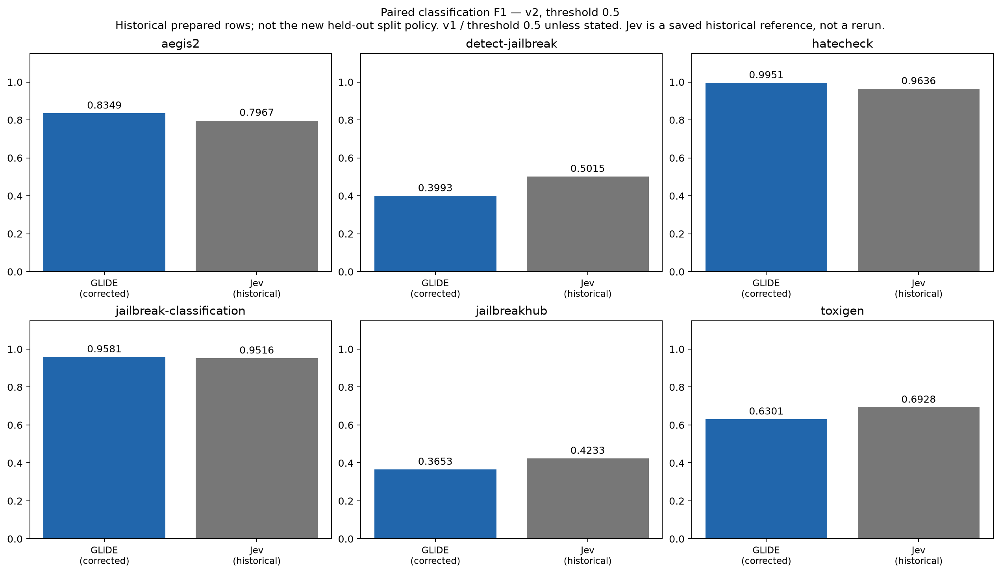
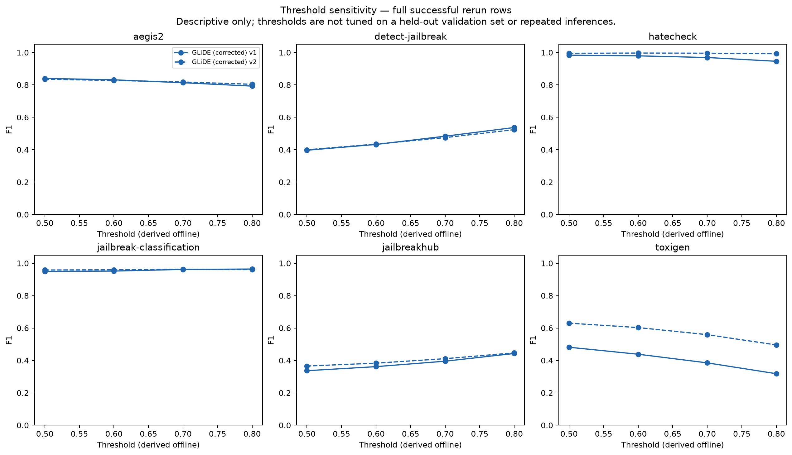
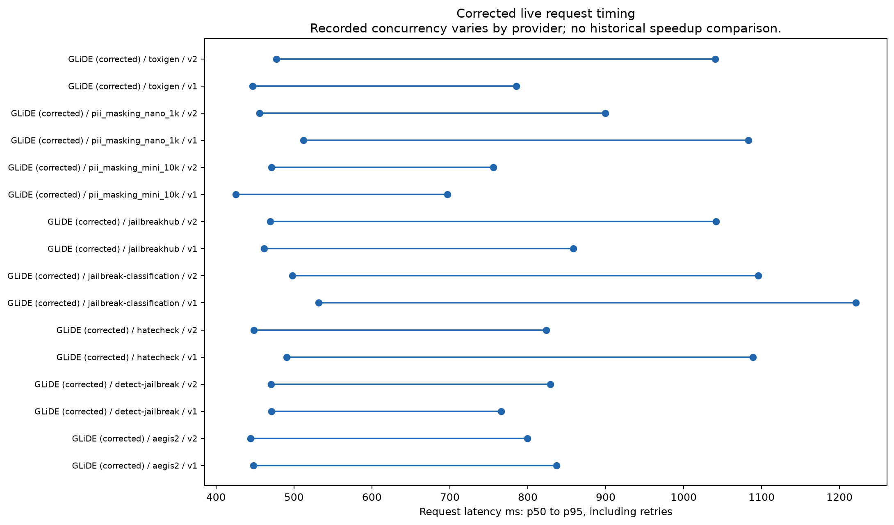
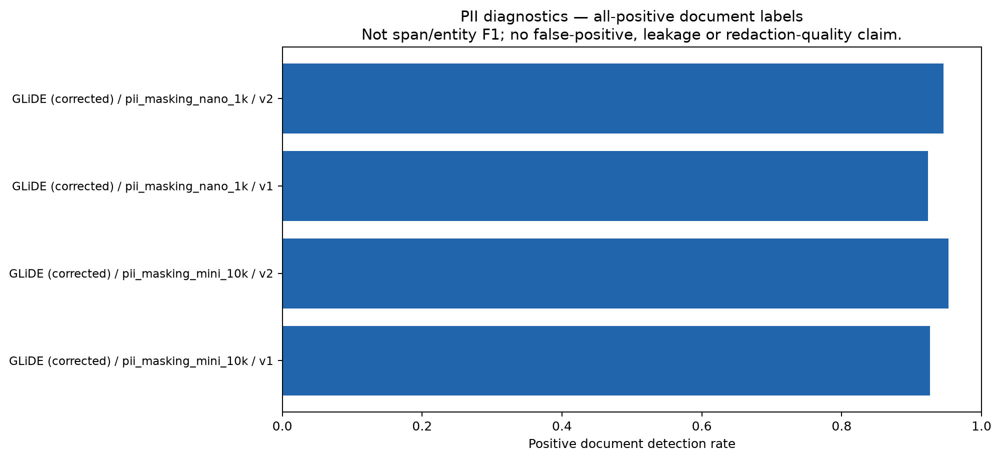
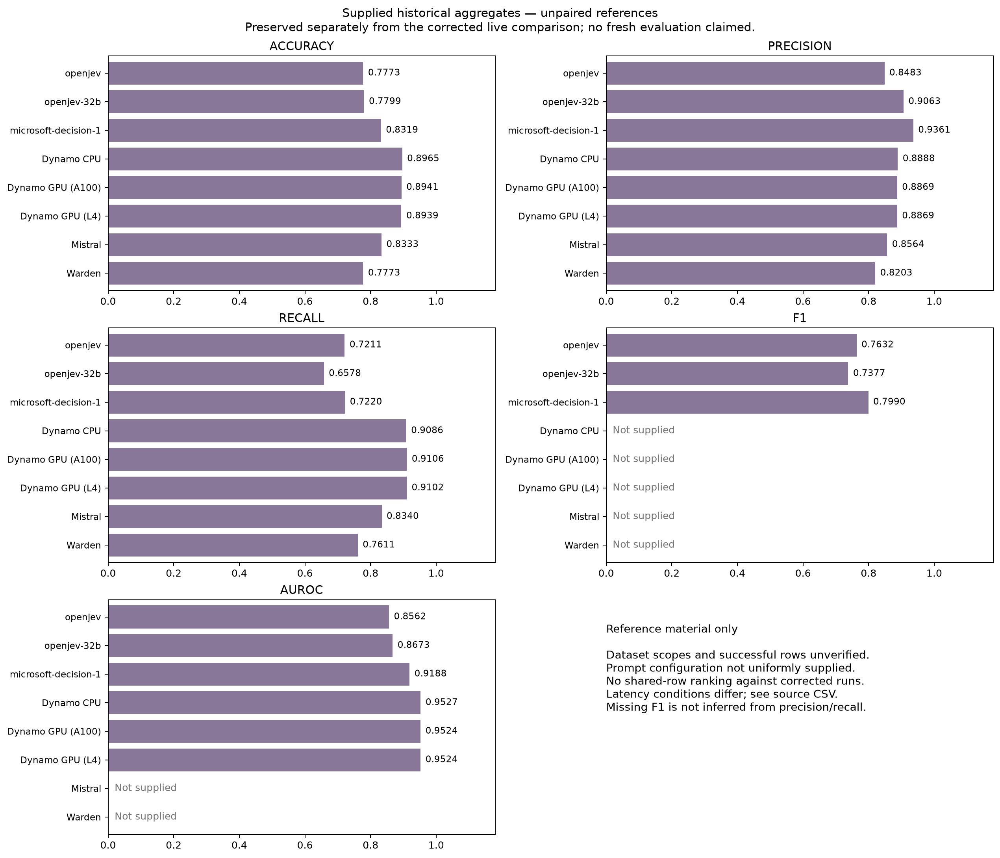

Historical prepared rows; not the new held-out split policy. v1 / threshold 0.5 unless stated. Jev is a saved historical reference, not a rerun. Laya: resumed after billing was restored; full rerun pending. Partial scores are excluded.
Full report · All figures PDF · Three-dataset CSV
v1: macro means over exactly three datasets. Corrected Noul versus paired historical Jev. Historical prepared rows; not the new held-out split policy. v1 / threshold 0.5 unless stated. Jev is a saved historical reference, not a rerun.

v2: macro means over exactly three datasets. Corrected Noul versus paired historical Jev. Historical prepared rows; not the new held-out split policy. v1 / threshold 0.5 unless stated. Jev is a saved historical reference, not a rerun.

Per-dataset paired rows; Detect Jailbreak excludes legacy NUL sample 15837.

Per-dataset paired rows; Detect Jailbreak excludes legacy NUL sample 15837.

Full rerun population; differs from paired Detect Jailbreak by one NUL row. Fixed primary threshold remains 0.5.

Per-request timing under concurrent workload, not elapsed/row throughput. Worker counts and means are in request_timing.csv.

Excluded from classification macro averages. Extraction benchmarking is a separate workflow.

Reference-only model aggregates preserved from the archived presentation; do not combine with corrected live scores for a leaderboard.
